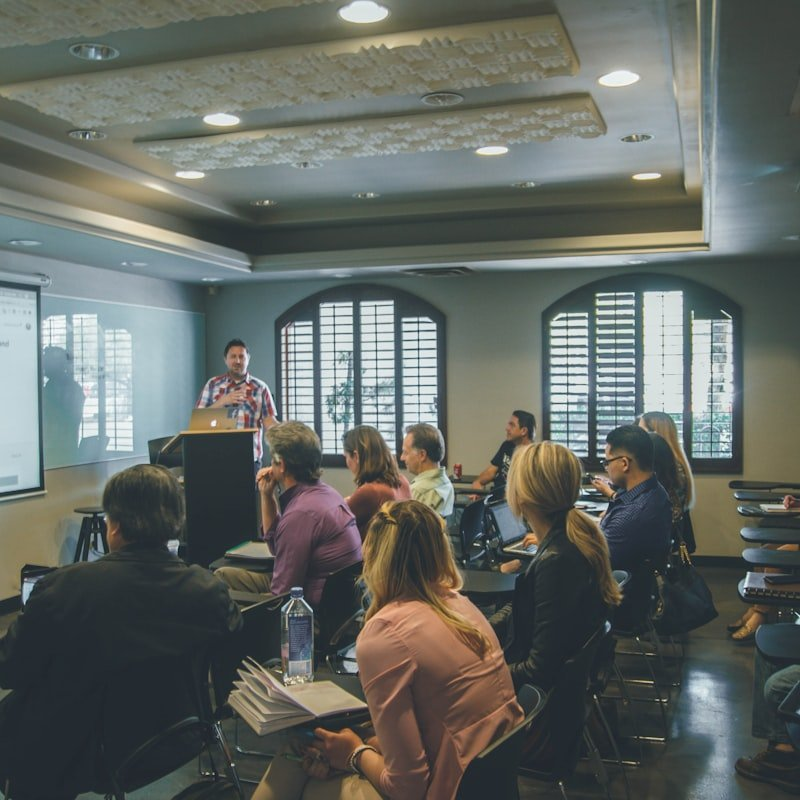
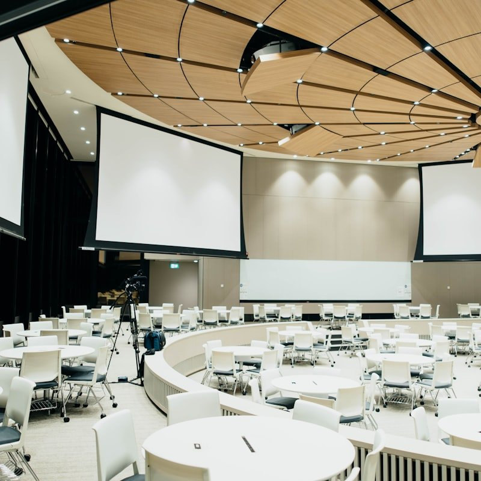

Illuminating Intellect. Transforming Academic Horizons.
At AcademyVision, we synthesize empirical pedagogical research, advanced computational laboratories, and deep humanistic scholarship to cultivate the next century of global thought leaders.
The AcademyVision Educational Paradigm
Anchored in epistemological rigor, cognitive psychometrics, and collaborative academic discovery.

Socratic Faculty Mentorship
Every scholar is paired with dedicated senior research fellows, maintaining an intimate 6:1 student-to-faculty advising ratio that fosters bespoke intellectual inquiry.
Active Epistemic Inquiry
Replacing passive didactic lecturing with inverted classroom methodologies, experiential case clinics, and empirical field research cohorts.
Transnational Fellowship
Direct academic exchange partnerships across 42 partner universities across 6 continents, enabling cross-border research collaboration and dual-accreditation pathways.
Distinguished Faculties & Programs
Interdisciplinary degree programs engineered to meet emerging intellectual and technological imperatives.
Faculty of Quantum & STEM Sciences
Bridging theoretical astrophysics, quantum computing algorithms, molecular biochemistry, and advanced structural mechanics.
Digital Humanities & Ethics
Interrogating literary archives, philosophical epistemology, digital historiography, and artificial intelligence ethics.
Pedagogical Leadership & Policy
Preparing educational policymakers, university deans, and psychometric curriculum architects for systemic school reform.
Cybernetic & Systems Engineering
Focusing on distributed neural networks, autonomous robotic architectures, and resilient urban civil infrastructure.
Endowed Research Institutes & Laboratories
Multimillion-dollar research facilities generating patentable discoveries and high-impact peer-reviewed monographs.
The Center for Cognitive Learning Analytics
Operating at the intersection of neuroscience and education, our flagship laboratory deploys EEG cognitive load mapping, eye-tracking attention matrices, and Bayesian formative assessment modeling to optimize human learning trajectories.
- $14.2M in active peer-reviewed national research grants
- Published across Nature Human Behaviour & Harvard Educational Review
- Open-source algorithmic evaluation toolkit deployed across 180 institutions
Academic Infrastructure by the Numbers
A rigorous ecosystem designed to nurture world-class scholarship and lifelong intellectual curiosity.
Distinguished Faculty & Research Chairs
Learn directly from renowned researchers, published authors, and MacArthur & Guggenheim awardees.
Dr. Alestair Vance, Ph.D.
Dean of Academic Research & Epistemology
Former Senior Fellow at Cambridge University. Author of 6 definitive texts on cognitive load dynamics in post-secondary curricula.
Prof. Elena Rostova, D.Sc.
Chair of Cybernetic & Quantum Systems
Pioneer in distributed neural architectures and fault-tolerant quantum algorithms, holding 19 international patents in computational optimization.

Dr. Marcus Chen, Ph.D.
Director of Digital Humanities Archive
Leading global preservation efforts using multispectral imaging and algorithmic text restoration across medieval manuscript corpora.

Active Socratic Colloquia & Annual Symposia
Education at AcademyVision extends beyond traditional examination metrics. Our scholars engage in semester-long defense colloquia, presenting peer-reviewed theses before international visiting evaluation panels.
Through the AcademyVision Annual Academic Symposium, over 1,200 international researchers converge on our campus to debate critical questions in climate policy, artificial cognition, and civic governance.
Review Institutional MissionArchitectural & Academic Living Environments
A serene, inspiring physical sanctuary designed to cultivate contemplation, collaboration, and discovery.
Reflections from Fellows & Alumni
What distinguished postgraduates and faculty peers observe about AcademyVision.
Dr. Clara Montgomery
Postdoctoral Fellow, Max Planck Institute"The intellectual freedom and computational resources at AcademyVision fundamentally accelerated my doctoral dissertation. The cross-disciplinary seminars enabled me to view molecular thermodynamics through an entirely novel statistical lens."
Dr. Sarah Jenkins
Cognitive Pedagogy Investigator"Unlike traditional universities that operate in rigid departmental silos, AcademyVision actively incentivizes joint appointments and interfaculty research grants. It represents the future of academic scholarship."

Dr. Julian Thorne
Senior Academic Policy Advisor"The rigor of the peer review culture and the uncompromising standard for empirical verification set AcademyVision apart. Scholars who train here go on to lead faculties across the world."
Frequently Addressed Institutional Questions
Essential details regarding our admissions process, scholarship funding, and academic governance.
Admissions at AcademyVision are conducted through a comprehensive holistic review process. Candidates are evaluated based on their demonstrated research portfolio, letters of recommendation from recognized scholars, an original research proposal, and a formal oral colloquium defense with the admissions committee.
Every accepted doctoral candidate receives a fully funded fellowship package for 4 to 5 years, encompassing complete tuition remission, a competitive living stipend, comprehensive health benefits, and a dedicated annual travel and laboratory grant of up to $8,500.
AcademyVision operates under regional collegiate accreditation through the Higher Learning Commission (HLC) and maintains disciplinary accreditations through ABET (Engineering and Applied Science) and the International Academic Standards Council (IASC).
Yes. Over 45% of our postgraduate candidates participate in concurrent joint-faculty programs, such as our Dual M.Sc. in Quantum Computing & Applied Epistemology or our Ph.D. in Computational Linguistics & Ethics.
Visiting research scholars may apply for a Visiting Scholar Access Grant, granting digital and physical reading room privileges. Our open-access institutional repository also hosts over 250,000 public monographs and research preprints.
Embark on Your Academic Journey at AcademyVision
Join a vibrant community of scholars, scientists, and visionaries dedicated to expanding the boundaries of human knowledge and pedagogical excellence.